Kit de interface
Tokens, componentes e elementos de assinatura do Lunar Celer, prontos para portar as telas do protótipo.

Componentes
Ceres · Eventos do Scrum
Cartão largo do bento
Ocupa a linha inteira; os demais se reorganizam em colunas.
Bloco menor
Bloco menor
CPF ou senha inválidos. Confira os dados e tente de novo.
60%
Item recolhível
Conteúdo que abre com um toque, como nas perguntas frequentes.
00:40
restantes de 02:30
Menos de 30 segundos
O que é o Sprint Goal?
O objetivo único da Sprint, criado na Sprint Planning e compromisso do Sprint Backlog.
| Tema | Sua resposta | Resposta correta |
|---|---|---|
| Ceres · Eventos do Scrum | B) Os Developers | B) Os Developers |